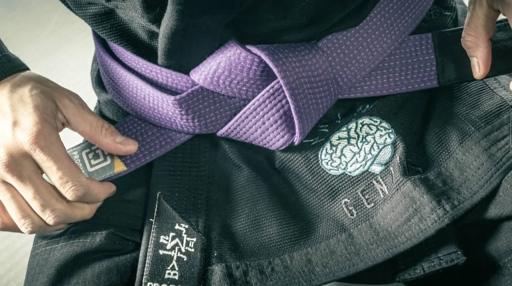
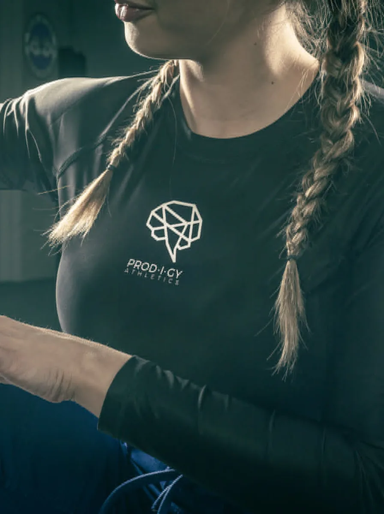
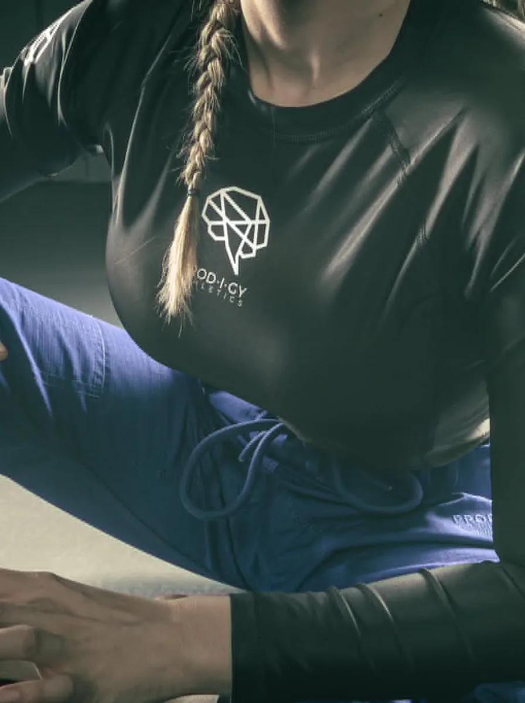
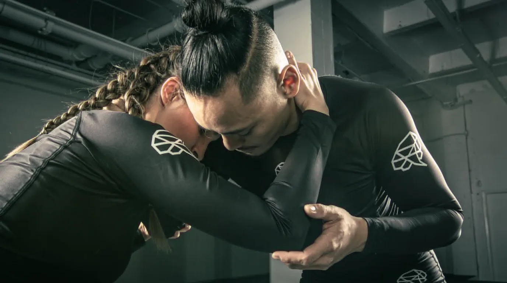
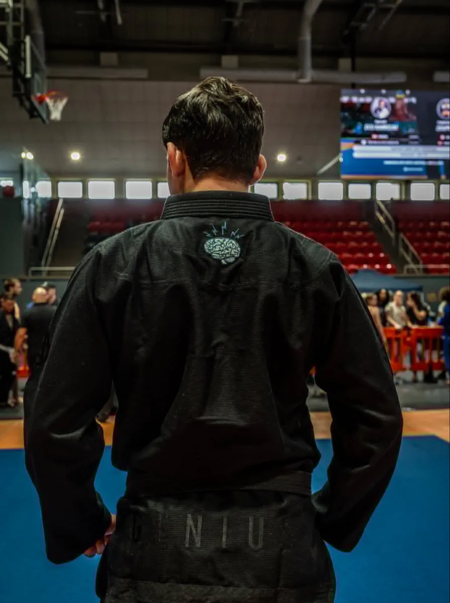
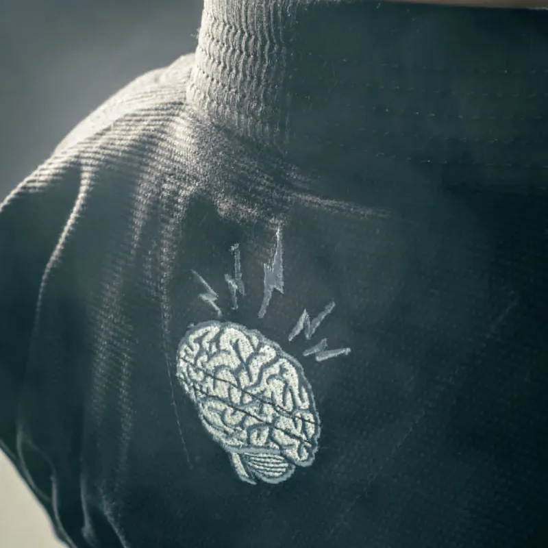
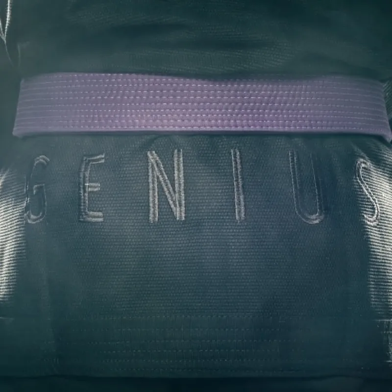
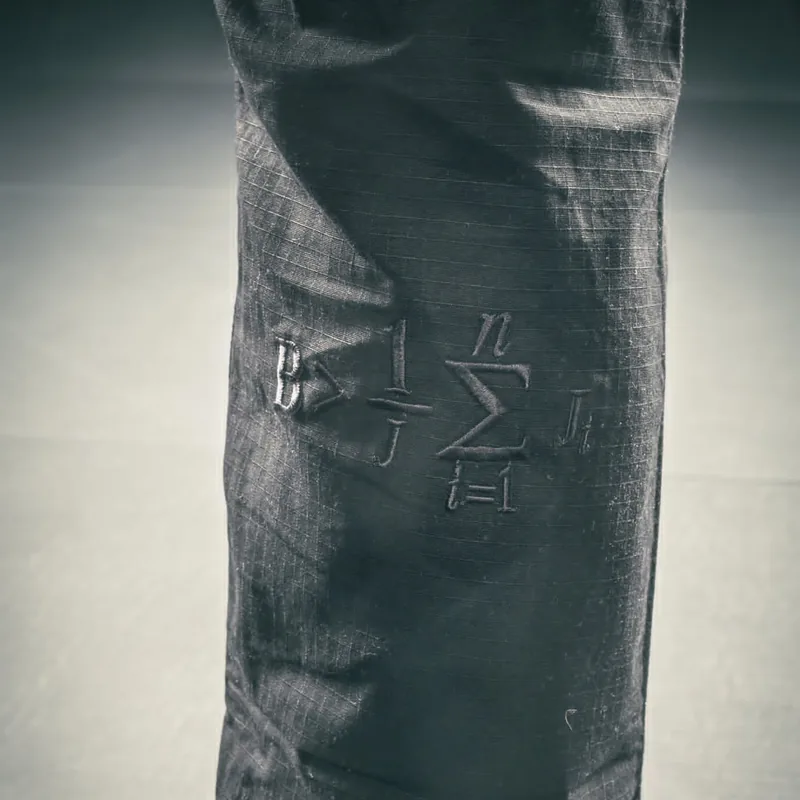
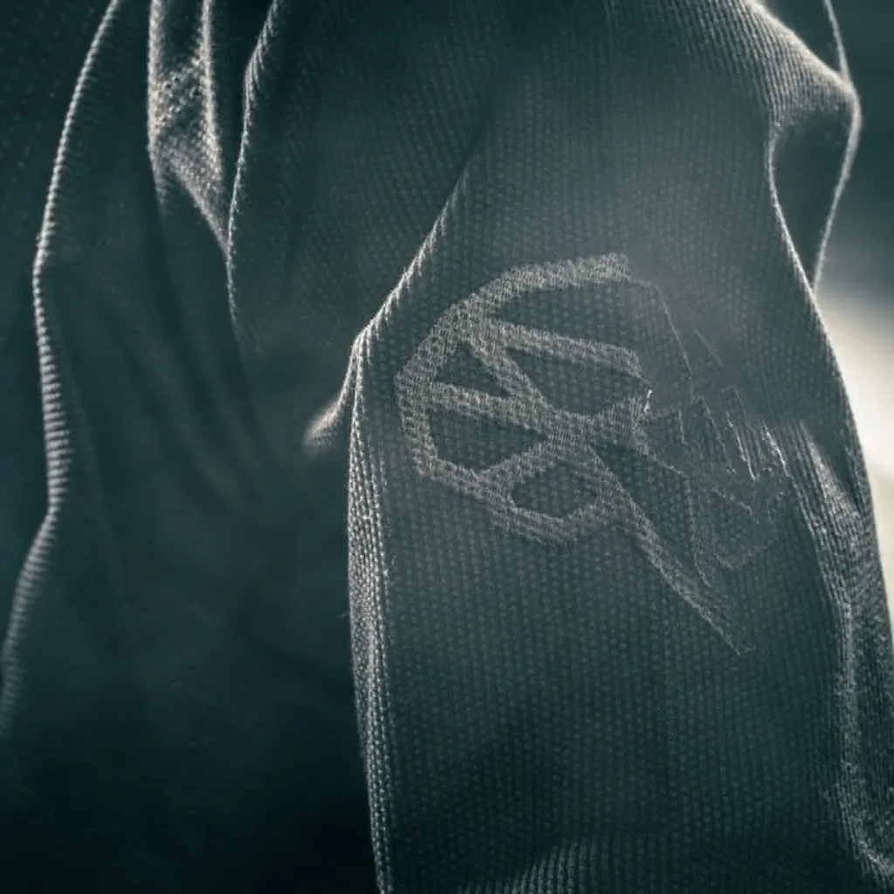

Black. White. Nothing else.
Long sleeve, chest lockup, sleeve print, back print. The version you wear when you are not thinking about what you are wearing.


Built as one.
One file, three cuts. The artwork prints flat on the roll and carries across the rashguard, the shorts and the spats — on both of you.

Shoulder to cuff.
The gi came first.
Prodigy started as a kimono company. GENIUS is the gi the team competes in — an embroidered brain between the shoulder blades, GENIUS across the back skirt, the equation down the pant leg.

The gi renders need JavaScript to draw. The photographs in this section are the client's own; none stands in for a product view.
| Jacket weave | — to confirm |
|---|---|
| Jacket gsm | — to confirm |
| Pant | — to confirm |
| Sizes | A0–A6 |
| Shrinkage | — to confirm |




The whole range.
Every product has its own page. The photographs below are placeholders — each garment flat on white, front and back — standing in for Prodigy’s own product photography until it arrives.